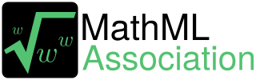

Hva er MathML?
MathML står for MathMarkupLanguage. Det er et semantisk markup language som er en del av HTML5. MathML brukes for å representere matematiske formler. Det er delt opp i to deler: C-MathML, hvilket beholder semantikken i det matematiske uttrykket, og P-MathML, som beskriver hvordan det skal se ut. Ettersom det er skrives direkte i koden er det mulig at nettleseren kan lese opp stykkene for de som trenger den hjelpen.
Så hvordan bruker man MathML?
C-MatML står for content MathML, og P-MathML står for presentation MathML. Content er en teks der det står forklart hva som skjer i formelen. Presentation i motsettelse beskriver bara hvordan det skal se ut med hvor tegn og nummer skal hvere i rekkefølgen.
Her er et eksempel på hvordan a + b opphøyd med 2 = a opphøyd med 2 + b opphøyd med 2 + 2 ganger ab
Binomial Theorem:
MathML var designet med tanke på tilgjengelighet for alle som bruker nettet. Folk med lesevansker eller blinde har derfor en mulighet å lese formlene.
Det er lettere å bruke MathML for å forklare.